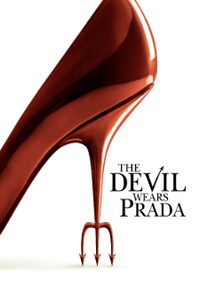

The Devil Wears Prada
Movie Details
- TMDB Rating: 7.0/10
- Genres: Drama, Comedy
- Release Date: June 30 2006
- Run Time: 1h 49m
Plot
Andy is a recent college graduate with big dreams. Upon landing a job at prestigious Runway magazine, she finds herself the assistant to diabolical editor Miranda Priestly. Andy questions her ability to survive her grim tour as Miranda's whipping girl without getting scorched.